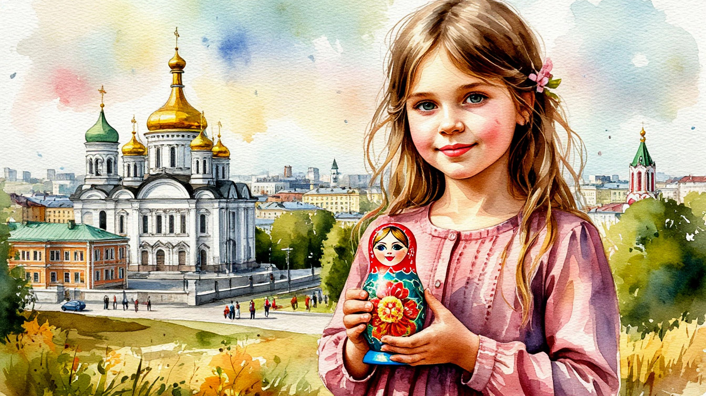

Нижегородская классика: всё самое важное

Даты тура: 16 - 20 апреля | 8 - 12 мая | 18 - 22 июня | 16 - 20 июля | 30 июля - 3 августа | 13 - 17 августа
Стоимость тура:
- 28 500 р. - взрослый
- 28 100 р. - пенсионеры/студенты/школьники
- 34 500 р./чел - одноместное размещение
Программа тура:
1 день: Отправление
- 22-00- выезд из Костромы от ТРЦ "РИО", правый угол от центрального входа
2 день: Нижний Новгород
- Прибытие в Нижний Новгород.
- Завтрак.
- Обзорная экскурсия по городу.
- Сейчас Нижний Новгород перестал быть «третьей столицей», зато тут же получил звание «Столица Поволжья», и теперь является центром Приволжского Федерального округа и одновременно – крупнейшим его городом. Нижний — город-"миллионник", пятый по численности населения город в России — с большим числом достопримечательностей и памятников архитектуры.
- В ходе экскурсии Вы увидите площадь Минина и Пожарского, Александровский сад, Чкаловскую лестницу, прогуляетесь по главной пешеходной улице города, называемой в народе "нижегородский Арбат" – Большой Покровской, посетите Благовещенский монастырь, Рождественскую церковь, Стрелку – место слияния Волги и Оки, собор Александра Невского, Нижегородская ярмарка.
- Экскурсия в Нижегородский Кремль - уникальное архитектурное сооружение, выдержавшее бесчисленное количество татарских набегов и не сдавшее своих позиций даже в тяжелые времена смуты и войн, было и остается сердцем города вот уже более шестисот лет.
- Обед.
- Экскурсия в Музей детства А.М. Горького ("Домик Каширина"). Дом деда Горького, нижегородского мещанина, старшины красильного цеха, гласного нижегородской думы В.В. Каширина, – памятник истории и культуры федерального значения, место, связанное с детскими годами писателя (1871–72), место действия автобиографической повести «Детство», одного из выдающихся произведений мировой литературы XX в., своеобразная энциклопедии русских характеров и национального образа жизни.
- В основе экспозиции – подлинные предметы быта XIX в., в т.ч. мемориальные, принадлежавшие семье Кашириных – Пешковых. Уникальная подлинная обстановка дома в естественной исторической среде, позволяет в полной мере представить образ жизни семьи Кашириных, в которой в раннем детстве происходило духовное становление будущего писателя Горького.
- Размещение в отеле. Свободное время.
- Свободное время
3 день: Золотая Хохлома*
- Завтрак.
- Свободное время в Нижнем Новгороде - это возможность неспешно прогуляться по главной улице города- Большой Покровской, посетить зоопарк "Лимпопо" или зону экстремальных аттракционов в Сормовском парке и прокатиться на подвесной канатной дороге, соединяющей Нижний Новгород с городом Бор
- ИЛИ
- отправиться на экскурсию "Золотая Хохлома" (по желанию и за доп. плату)*
- Отправление в Семёнов (Нижний Новгород → Семёнов: 76 км)
- Город отличается довольно интересным строением, за что и получил своё второе название - «маленький Париж». План поселения утвердила Екатерина II. Это должен был быть огромный квадрат, который состоит из 16-ти меньших квадратов. Две линии улиц располагались по диагонали, а на их пересечении – центральная площадь. Отчасти это строение сохранилось и по сегодняшний день.
- Экскурсия на производство.
- Удивительную атмосферу творчества подарит само производство. Воочию можно наблюдать «рождение» хохломских изделий, этапы его изготовления. Вживую увидеть, как работают руки художников, ощутить запах дерева и красок, прочувствовать магическое действие ушедших эпох и поколений, унаследованное мастерами и удивиться новым, современным работам.
- Посещение ассортиментного кабинета. С момента создания в 1964 году творческой лаборатории на фабрике, открыт для доступа гостей ассортиментный кабинет. Отличие его от музеев в том, что это действующее подразделение, в котором собраны и бережно хранятся образцы-эталоны производимой предприятием продукции. Именно здесь можно застать проходящий художественно-экспертный совет фабрики, увидеть работы художников по проводимым два раза в год конкурсам профессионального мастерства «Душа мастера» и «Зимняя сказка», открыть для себя художественный почерк именитых мастеров.
- Мастер-класс по росписи матрешки.
- Экскурсия в музей «Золотая Хохлома». Экспозиционные залы познакомят посетителей с истоками искусства хохломы и самой большой в стране коллекцией предметов с хохломской росписью XIX – первой половины XX веков. «Царская комната» поразит поистине монаршим размахом и богатством современной хохломы, а символы международного фестиваля «Золотая хохлома» удивят своими размерами.
- Посещение фирменного магазина «Золотая хохлома», где Вы сможете приобрести различные изделия нижегородских мастеров: сувениры, бижутерия, посуда, иконы, офисные принадлежности и даже мебель.
- Свободное время на обед.
- Отправление в Нижний Новгород.
- Свободное время.
4 день: Арзамас + Дивеево
- Завтрак.
- Отправление в Арзамас (Нижний Новгород → Арзамас: 113 км).
- История Арзамаса тесно связана с историей России: нередко по стечению обстоятельств город оказывался в центре выдающихся исторических событии. Арзамасу более четырех веков. Прошлое его сохранилось в архитектурном облике каменных купеческих домов, величественном образе Соборной площади, благородных фресках Воскресенского собора, полотнах первой провинциальной школьной живописи А.В. Ступина. Многие из великих русских писателей и поэтов оставили свой заметный след в общественной и культурной жизни города. Арзамас и ныне выглядит как город-музей. Чтобы узнать этот город лучше, почувствовать его отправляемся на обзорную экскурсию.
- Далее - посещение главной достопримечательности города – кафедрального Воскресенского собора, построенного в честь победы над Наполеоном в 1841 году и сохранившего до наших дней уникальные фрески в стиле сепия и православные святыни.
- Свободное время.
- Отправление в Дивеево (Арзамас → Дивеево: 80 км).
- Обед.
- Дивеево – четвёртый удел Богородицы. В программе: Дивеевский монастырь, посещение Троицкого собора, посещение Преображенского собора, приложение к раке с мощами святого Серафима Саровского, посещение часовни Серафима Саровского, Канавка Царицы Небесной.
- Монастырь возник во второй половине XVIII века: около 1758 года прибыла в Киев богатая рязанская помещица Агафья Семёновна Мельгунова, которая в молодости лишилась мужа и дала обет посвятить свою жизнь Богу. Она приняла монашеский постриг в Киево-Флоровском монастыре, с именем матушки Александры. Однажды, после ночного молитвенного бдения в Свято-Успенской Киево-Печерской Лавре, ей было видение Пресвятой Богородицы. Божья Матерь сказала матушке Александре: "...Иди на север России и обходи все великорусские места святых обителей Моих. И будет место, где Я укажу тебе окончить богоугодную жизнь твою, и прославлю имя Моё там, ибо в месте жительства твоего Я осную великую обитель Мою"
- Лаврские старцы признали видение матушки Александры истинным, и с их благословения монахиня отправилась в странствие по Руси. В 1760 году матушка Александра шла из Мурома в Саровскую пустынь. Не дойдя двенадцати вёрст до Сарова, она остановилась отдохнуть в селе Дивеево, и здесь, ей вновь было видение Божьей Матери, которая обратилась к монахине со словами: "Вот то самое место, которое Я повелела тебе искать на севере России… ". Так был основан Дивеевский монастырь.
- Свободное время на территории монастыря.
- Поездка к святому источнику Серафима Саровского
- В саровском лесу, на берегу реки Сатис, находится легендарное для православных христиан место- источник Преподобного Серафима Саровского. По преданию, источник этот возник в 1960-е гг. Солдаты, служившие в Саровском лесу, однажды увидели старца в белых одеждах. На вопросы постовых тот не ответил, зато трижды ударил посохом о землю и исчез. Поиски нарушителя спокойствия, успехом, конечно, не увенчались. А спустя некоторое время, на месте где это произошло, забили три ключа. Говорят, что эта вода способна излечивать болезни. Территория вблизи источника благоустроена, сооружены лестницы для удобного спуска в воду, а также купальни с раздевалками.
- Купание, набор святой воды.
- Отправление домой.
5 день:
- Возвращение в Кострому в первой половине дня
В стоимость тура входит:
- - проживание в гостинице*
- * Гостиница «Автозаводская» (Реестровый адрес: С522024000637)
- - питание по программе
- - услуги гида-экскурсовода
- - экскурсионная программа
- - автобусное обслуживание по программе тура
За дополнительную плату (по желанию):
- - Экскурсия "Золотая Хохлома" 2 400 руб (при покупке заранее), 2 600 руб. (при покупке на месте)
- Для бронирования необходимы данные паспорта РФ и свидетельства о рождении, если с вами путешествуют дети
- Предоплата – 50% от стоимости тура. Остаток за 30 дней до даты выезда.
- Любой тур можно оформить не выходя из дома. Подробнее: Тут
Стоимость тура не зафиксированы и могут быть изменены в большую или меньшую сторону в зависимости от уровня спроса в любой момент.
Время начала экскурсий и их порядок указано ориентировочно.
Фирма-исполнитель оставляет за собой право замены экскурсий без уменьшения общего объема экскурсионной программы.
По вопросам бронирования обращайтесь: